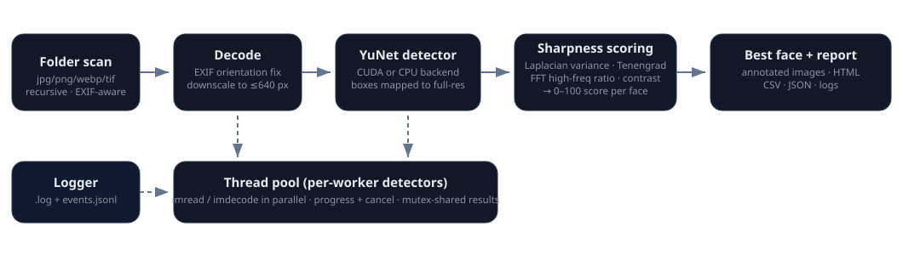
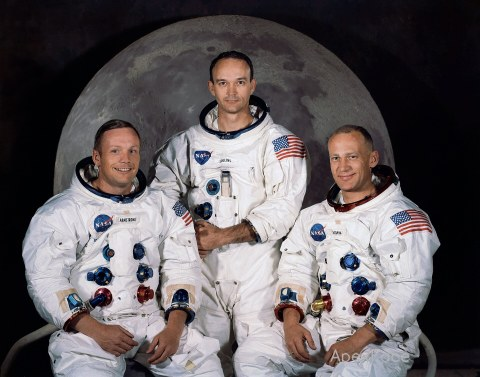

Methodology, calibration & benchmarks — technical companion to the README. Version 1.0.0 (October 2026).
Event photographers (road races, weddings, group shoots) accumulate thousands of frames that differ mainly in whether the subject's face is critically sharp. Generic "best photo" pickers score the whole frame; ApexFace is deliberately narrow:

_apexface (its own output) to keep re-runs clean.std::ifstream (full Unicode paths), decoded with cv::imdecode, then the EXIF orientation is applied manually (parsed from the APP1 segment) so detection boxes match what the user sees.cv::FaceDetectorYN), and boxes are mapped back to full resolution. Detections below min-face (default 28 px) are dropped; results sorted by confidence.For a face crop g (grayscale, 3×3 Gaussian σ = 0.8 prefilter to suppress sensor noise):
| Metric | Formula | Intuition |
|---|---|---|
| Laplacian variance | var(∇²g) | The classic blur detector (Pech-Pacheco et al. 2000). In-focus optics produce high-frequency detail; defocus/motion blur attenuates exactly those frequencies. |
| Tenengrad | mean(Gx² + Gy²), Sobel 3×3 | Gradient-magnitude energy (Tenenbaum 1970). Robust complementary estimate of edge strength. |
| FFT high-frequency ratio | energy beyond r > 64 ÷ total, on a 256×256 DFT of the crop | Spectral view of the same phenomenon; resists texture-scale bias a little and gives a bounded (0–1) signal. |
| RMS contrast | std(g) | Reported for diagnosis; not weighted into the score. |
Score mapping. Each metric is squashed to 0–100 with a soft saturation curve
100·x/(x+k) (Laplacian, Tenengrad) or a linear cap (fftHF/fftRef), then combined:
score = (0.55·lapScore + 0.35·tenScore + 0.10·fftScore) · resFactor
resFactor = faceW ≥ 96 px ? 1.0 : 0.55 + 0.45·(faceW/96)resFactor encodes a physical truth: a face that is only ~40 px wide cannot carry
fine detail regardless of optics. Constants (v1.0.0): kLap = 350,
kTen = 1200, fftRef = 0.0018.
Ratings. A+ ≥ 85 · A ≥ 72 · B ≥ 58 · C ≥ 42 · D < 42 — band colors are used consistently in the GUI, annotations and report.
| Candidate | Verdict |
|---|---|
| Haar cascade (built into OpenCV) | Dated accuracy, many false positives on profile/small faces |
| MediaPipe / RetinaFace / SCRFD | More accurate at tiny faces but much heavier dependencies |
| YuNet ✅ | 232 KB ONNX, state-of-the-art-per-byte, first-class OpenCV API (cv::FaceDetectorYN), runs on CPU and CUDA DNN backend |
Backend selection: auto tries CUDA (DNN_BACKEND_CUDA +
DNN_TARGET_CUDA) with a warm-up forward pass; any failure falls back to CPU and is
logged. CUDA mode shares one detector instance across workers (mutex); CPU mode gives every
worker its own net.
Score constants were calibrated on 400 real photos (Sony A7M3, 24 MP, outdoor road race,
708 detected faces) — exactly the domain ApexFace targets. Raw metrics were dumped with
--dump-metrics and inspected as quantiles:
| p05 | p10 | p25 | p50 | p75 | p90 | p99 | |
|---|---|---|---|---|---|---|---|
| Laplacian variance | 58 | 63 | 92 | 415 | 609 | 826 | 1244 |
| Tenengrad | 367 | 497 | 1051 | 2614 | 3496 | 4614 | 6552 |
| FFT HF ratio | 0.0002 | — | — | 0.0011 | — | 0.0016 | 0.0022 |
| score (v1.0.0) | 17 | — | 31 | 60 | 68 | 74 | 80 |
kLap = 350 the resulting score spreads across the rating bands instead of piling up
at the top (the pre-calibration kLap = 80 put p50 at 70 and p90 at 78 — everything
looked like a keeper).Synthetic validation — the same photo, with and without a Gaussian blur (σ = 7):

The score tracks the physical blur, not file identity.
GTX 1060 6GB, CUDA 12.9 build of OpenCV, 8 workers, 24 MP (3936×2624) JPEG input:
| Run | Images | Faces | Wall time | Throughput |
|---|---|---|---|---|
| Full race folder — thumbnails only | 9,416 | — | 399 s | ~23.6 img/s |
| Full race folder — full export (annotated copies + CSV/JSON) | 9,308 | 19,745 | 558 s | ~16.7 img/s |
| Race folder sample (400 photos) | 400 | 708 | 15.4 s | ~26 img/s |
| Demo samples (5 photos) | 5 | 13 | 1.5 s | — |
Both full-folder runs finished with 0 errors; the first pass moved 108 grade-D/no-face
files to _apexface_rejects, and the second pass (post-move) detected a face in
every single remaining image and scored the best one at 96.2 / 100.
Per-image budget (typical): decode 35–55 ms, detection 30–50 ms, scoring 10–80 ms (scales with face box size), thumbnail/annotated encode the remainder. Decode + encode dominate, so the CPU thread pool helps even when detection runs on the GPU.
min-face px; 16 px faces are the practical minimum.